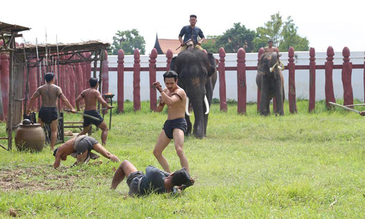

อยุธยา
"ราชธานีเก่า อู่ข้าวอู่น้ำ เลิศล้ำกานต์กวี คนดีศรีอยุธยา"
เสน่ห์เมืองเก่า... พระนครศรีอยุธยา

จังหวัดพระนครศรีอยุธยาหรือเรียกสั้นๆ ว่า"อยุธยา"
ตั้งอยู่ในภาคกลางเป็นเมืองหลวงเก่าของไทย สร้างขึ้นเมื่อ พ.ศ. 1893 โดยสมเด็จพระเจ้าอู่ทอง หรือ สมเด็จพระราคมธิบดีที่ 1 ในเวลา 417 ปีที่กรุงศรีอยุธยาเป็นราชธานี มีกษัตริย์ปกครอง 33 พระองค์ จาก 5 ราชวงศ์ คือ ราชวงศ์อู่ทอง ราชวงศ์สุพรรณภูมิ ราชวงศ์สุโขทัย ราชวงศ์ปราสาททอง และราชวงศ์บ้านพลูหลวง นับเป็นราชธานีของไทยที่มีอายุยืนยาวที่สุดในประวัติศาสตร์ชาติไทย
อยุธยา หลายคนรู้จักดี ด้วยประวัติครั้นเมื่อเป็นราชธานีเก่าแก่กว่า 700 ปี ได้รับจาก UNESCO เป็น มรดกโลก มีวัดและสถานที่ทางประวัติศาสตร์นับร้อยแห่ง
แนะนำ
ที่เที่ยวอยุธยาน่าไป ตามรอยละคร บุพเพสันนิวาส
"เข้าไปเป็น มาแรงแบบฉุดไม่อยู่ สำหรับละครอิงประวัติศาสตร์เรื่อง “บุพเพสันนิวาส” เป็นละครที่ย้อนไปในสมัยอยุธยา การดำเนินเรื่องของละครแฝงไปด้วยความรู้ต่างๆ มากมาย อาทิ การแต่งกาย การพูด ขนบธรรมเนียมและประเพณีต่างๆ เป็นต้น ซึ่งสิ่งเหล่านี้ช่วยให้ประชาชนกันมาสนใจในประวัติศาสตร์ไทยมากยิ่งขึ้น
รู้ก่อนเที่ยว
โปรแกรมเที่ยว

เริ่มต้นที่วัดใหญ่ชัยมงคล ต่อที่วัดพนัญเชิง แวะกินก๋วยเตี๋ยวไก่ฉีกหน้าวัด แวะชมป้อมเพชร พิพิธภัณฑ์เจ้าสามพระยา วิหารพระมงคลบพิตร พระศรีสรรเพชญ์แล้วไปต่อที่เพนียดคล้องช้าง ขี่ช้างเดินชมรอบเมือง ชมความอลังการของวัดไชยวัฒนาราม สักการะหลวงพ่อดำที่วัดพุทไธศวรรย์ ปิดท้ายที่หมู่บ้านโปรตุเกส
ย่ำไปตามรอยทางที่บรรพชนเคยก้าวย่าง ผ่านเรื่องราวและเกร็ดประวัติศาสตร์ที่น่าจดจำ สงครามแห่งอดีตอาจเผากรุงศรีให้เหลือเพียงซากปรักหักพัง แต่ไม่อาจผลาญรากเหง้าแห่งวัฒนธรรม ที่ฝังรากหยั่งลึกให้มอดไหม้ไปได้เลย